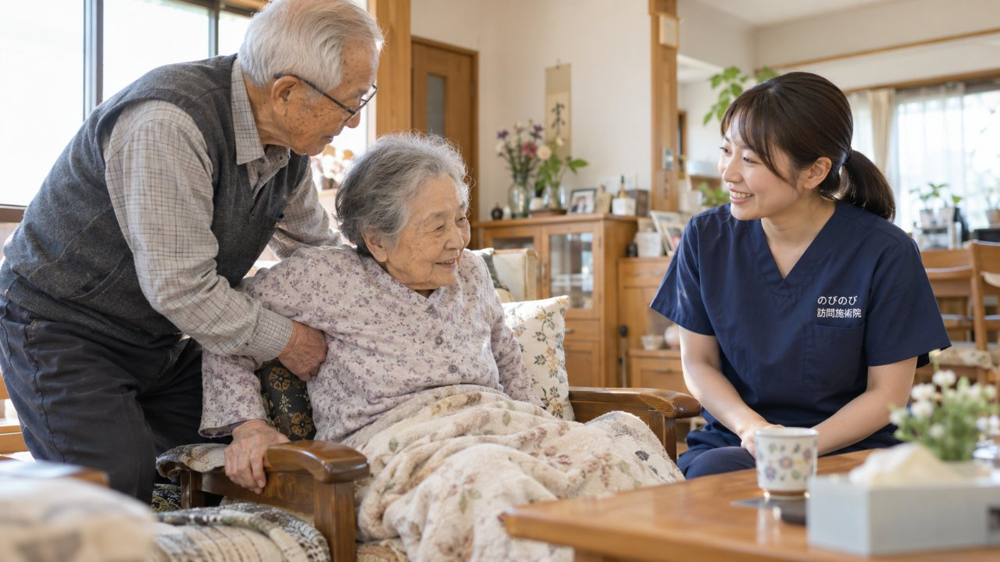

高齢のご夫婦や、親と高齢の子が支え合う「老老介護」では、介護する側もされる側も体に無理がたまりがちです。訪問鍼灸マッサージは、要介護のご本人だけでなく、介護するご高齢の方自身の腰や肩、膝の痛み、疲れにも手を入れられます。国家資格を持つ施術者がご自宅に伺うので、介護者が家を空けずにケアを受けられるのが利点です。ご本人が医師の同意書の対象になれば、医療保険で1回およそ395円から。要介護認定は不要で、介護保険の限度額とは別枠です。介護者側が施術を受ける場合は、その方の状態に応じて保険か自費かをご案内します。共倒れを防ぐには、支える人の体も大切にすることが欠かせません。ここでは、老老介護のご家庭で訪問鍼灸マッサージにできることを整理します。施術は病気そのものを治すものではなく、あらわれ方には個人差があります。
結論から先に。はい。ご本人のケアとあわせて、介護するご家族の腰痛や肩こり、疲れにも手を入れられます。医師の同意書の対象になる慢性的な痛みがあれば医療保険で、そうでない場合はその方の状態に応じてご案内します。
老老介護で、体に何が起きやすい？
高齢のご夫婦どうし、あるいは親と高齢の子が支え合う老老介護では、介護する側の体にも大きな負担がかかります。抱えかかえの動作での腰痛、力を入れ続けることでの肩や膝の痛み、休めないことでの疲れの蓄積。介護される側も、動く機会が減って筋肉が落ちたり、関節が固まったりします。
支える人が倒れてしまえば、暮らし全体が立ちゆかなくなります。ですから、支える人の体も大切にすることが欠かせません。訪問鍼灸マッサージは、その両方に寄り添えるケアのひとつです。介護をしながら働いておられる方については、働きながら親の介護をしているご家族へにまとめました。
家を空けずに受けられる｜訪問という強み
老老介護のご家庭では、「自分がケアを受けたくても、家を空けられない」という声をよく聞きます。訪問鍼灸マッサージは、施術者がご自宅に伺うので、介護者が家を離れずにケアを受けられます。ご本人の施術に伺ったときに、介護するご家族の肩こりや腰の疲れについても、あわせてご相談いただけます。
外出や送り迎えの負担がないぶん、続けやすいのも訪問の強みです。移動の心配なく、住み慣れた家で体をゆるめる時間をつくれます。
ご本人のケア｜こわばり・痛み・むくみをやわらげる
介護される側のご本人には、動く機会が減って固くなった筋肉をやわらげ、痛みやこわばり、むくみに、手技やお灸で寄り添います。関節が固まらないよう、その日の体に合わせて動かす機能訓練も組み合わせます。ねらいは、病気を治すことではなく、体の重さやこわばりをやわらげて、毎日の介助や過ごしやすさを支えること。
着替えや移動が少し楽になると、介護する側の負担も軽くなります。あらわれ方には個人差がありますが、続けることで日々の動作を支える発想です。
介護する側の体もケアできる
老老介護では、支える側の体こそ守りたいものです。介護による腰痛や肩こり、膝の痛み、疲れに対しても、施術で寄り添えます。介護する方が医師の同意書の対象になる慢性的な痛みなどを抱えている場合は医療保険で、そうでない場合はその方の状態に応じてご案内します。
「自分のことは後回し」になりがちなご家族こそ、体をゆるめる時間を持つことが、介護を続ける力につながります。共倒れを防ぐために、支える人のケアを遠慮しないでください。
料金と保険｜1回およそ395円から、限度額とは別枠
介護されるご本人が医師の同意書の対象になれば、のびのびの訪問鍼灸マッサージは医療保険で受けられます。はり・きゅうの場合で1回の総額3,950円、1割負担の方でおよそ395円が目安です。医療保険なので介護保険の限度額とは別枠で、要介護認定も不要です。ケアプランとの兼ね合いは医療保険と介護保険の使い分けをご覧ください。
対応エリア内であれば出張費や交通費の上乗せはなく、料金は一律。介護する側の方が施術を受ける場合の費用は、その方の状態に応じて、始める前に分かりやすくご説明します。
ケアマネ・多職種との連携
老老介護のご家庭は、ケアマネジャーやヘルパー、訪問看護など、多くの支えとつながっていることが多いです。訪問鍼灸マッサージも、その一員として、ご本人とご家族の体を軽くする役割を担えます。のびのびでは、施術で気づいた体や暮らしの様子を、ケアマネジャーや医療と共有しながら進めます。
介護する側の疲れが限界に近いと感じたら、そのサインを支援につなぐこともできます。ひとりで、あるいは二人だけで抱え込まず、頼れる相手を増やしていきましょう。
受けるまでの流れ｜相談から始められます
はじめは、ご本人の状態や、介護するご家族のお困りごとをうかがう相談から始められます。医師の同意書の手続きはのびのびが進めます。無理な勧誘や契約を急かすことはいたしません。
「自分たちだけで頑張らないといけない」と思い詰める前に、まずは気軽にご相談ください。ご本人のケアと介護者の体のケア、どちらもどう支えられるか、一緒に整理します。合わないと感じれば、続けなくて結構です。
支える人が倒れないために
老老介護でいちばん避けたいのは、支える人が体をこわして共倒れになることです。ご本人の体を支えることと同じくらい、介護するご高齢の方自身の体を守ることが大切です。数百円で続けられる体のケアの積み重ねが、痛みや疲れをやわらげ、介護を続ける力の支えになることもあります。
無理を重ねる前に、頼れるものは頼ってください。のびのびは、ご本人とご家族の両方に力になれればと考えています。なお、施術は病気そのものを治すものではなく、あらわれ方には個人差があります。
よくある質問
介護している高齢の家族自身も施術を受けられますか？
はい。ご本人のケアとあわせて、介護するご家族の腰痛や肩こり、疲れにもケアができます。医師の同意書の対象になる慢性的な痛みがあれば医療保険で、そうでない場合はその方の状態に応じてご案内します。
家を空けられないのですが受けられますか？
訪問なので、家を空けずにご自宅でケアを受けられます。ご本人の施術に伺った際に、介護するご家族の体も一緒にケアできます。
費用はどのくらいですか？
介護されるご本人が同意書の対象になれば、はり・きゅうで1回の総額3,950円、1割負担で約395円が目安。介護保険の限度額とは別枠で、要介護認定は不要です。
ケアマネジャーと連携してもらえますか？
はい。施術で気づいた体や暮らしの様子をケアマネジャーや医療と共有しながら進めます。介護者の負担が限界に近いサインを支援につなぐこともできます。

要介護認定がなくても訪問鍼灸マッサージは受けられる？｜介護保険との関係
続きを読む
がんの在宅療養を支える体のケア｜痛み・こわばり・むくみと訪問鍼灸マッサージ
続きを読む
訪問鍼灸マッサージは医療保険？介護保険？どっちで受けるかと、上手な併用のしかた
続きを読む
介護保険の限度額がいっぱいでも足せる「もう一手」<br>医療保険の訪問鍼灸マッサージ
続きを読む
施設でも訪問鍼灸マッサージは受けられる？施設種別ごとの可否を一覧でわかりやすく解説
続きを読む